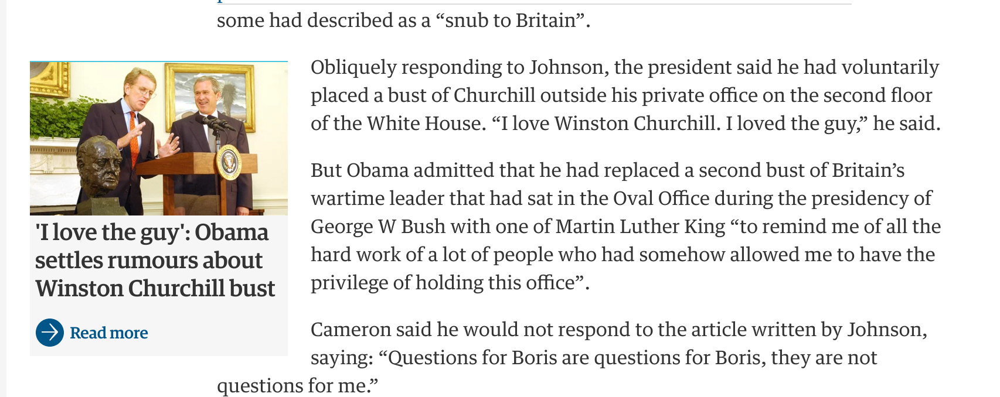

Drupal 8 Media Status
Janez Urevc / @slashrsm / http://janezurevc.nameJanez Urevc (@slashrsm)
- senior engineer and team lead at MD Systems
- Active member of Drupal community since 2009
- Lead of the D8 media initiative
- ex Examiner.com
Among top contributors
- our CTO (@berdir) is one of top 5 D8 contributors
- D8 expert
- D8 media expert - lots of media clients
- 20% of every project to the community
- http://www.md-systems.ch/en
- Services include: Full projects, site audits, bootstrap weeks, support/consulting, architecture planning, ...
What is in Drupal 8?
CKEditor + Basic image upload
What is in Drupal 8?
Basic file listing page

What is in Drupal 8?
Basic file usage page

What is in Drupal 8?
Configurable file cleanup


Only that?!
Media Entity
Status: Stable release
drupal.org/project/media_entity
Completed:
- Per-type business logic: thumbnails, name, ...
- Metadata handling API
- UI for automatic metadata sync
- Lots of provider integrations: Embeddable videos (YouTube, Vimeo, ...), Twitter, Instagram, local files, Soundcloud, slideshows, ...
- Media library
Want to get involved?
- Include it into Drupal core [#2801277]
- Write more providers
Anyone ever seen something like this?
Source: www.theguardian.com
Or this? Anyone?

Source: www.nytimes.com
Entity Embed
Status: Beta
drupal.org/project/entity_embed
- Can embed any renderable entity type
- Clean API, based on core image embed
- Improved UX of display configuration
- Integrate selection with Entity Browser
- Backported to Drupal 7
Want to get involved?
Open tasks tasks:
- Usability polish
- Improve test coverage
- Fix remaining bugs
Have you ever...
...wanted to upload multiple images and select few more from the library?

...tried to search for a related content to be referenced?

...needed to create related entity without leaving the context?

Entity Browser
Status: "Almost" beta
drupal.org/project/entity_browser
General entity browsing, selecting and creating tool. Works with any entity type. Can work with fields, WYSIWYG, custom forms, ...
Already completed:
- Architecture and API
- Integration with Inline Entity Form
- Views integration
- Multi-step workflows
- Conditions/constraints
- Entity reference, file and image fields support
- Entity embed integration
- ...
Want to get involved?
Remaining tasks:
- Fix bugs...
- ...specially in (nested) Paragraphs and IEF area - beta blocker!
- Improve test coverage
- UX polish
Inline entity form (IEF)
What?! But...

... isn't that Drupal Commerce stuff?!

Collaboration!
Reusable components!
Inline entity form (IEF)
Status: Usable
drupal.org/project/inline_entity_form
Completed:
- IEF form element
- Field widget (simple & complex)
- Entity browser integration
Remaining:
- Code cleanup
- Tests
File Entity
Status: Beta
drupal.org/project/file_entity
Extends core's file entity type with fieldability and add/edit/delete forms.
Might become deprecated based on recent core plans.
Media
Status: in development
A "glue" module that brings all the components together.
Based on Media entity, Entity browser, Entity embed, Image widget crop, ...
One of the possible starting points!
There is more!
Drupal core plans
- Move media entity in core [#2801277]
- Add support for one "remote" video provider [#2801277]
- Implement media library using media entities [#2796001]
General plan issue [#2786785]
Want to help?
- Let your developers work on core issues
- Send them to sprints
- Host a sprint
- Fund other developers
- Fund sprint costs (travel, accomodation, ...)
Resources
- Weekly scrum meetings on #drupal-media IRC (14:00 UTC)
- github.com/drupal-media
- groups.drupal.org/media
- @slashrsm - drupal.org/u/slashrsm
Drupal 8 Media Guide
drupal-media.gitbooks.io/drupal8-guide